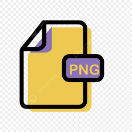

Introducción a los Formatos de Imágenes
En este sitio exploraremos los principales formatos de imágenes utilizados en la web. Cada uno de estos formatos tiene características únicas que lo hacen adecuado para diferentes usos.
JPEG (Joint Photographic Experts Group)
Características:
- Compresión con pérdida, reduciendo el tamaño del archivo.
- Ideal para fotografías con gradientes de color.
- No soporta transparencia.
- Compresión ajustable para equilibrar calidad y tamaño del archivo.
Usos:
- Fotografías y imágenes con muchos colores y detalles.
- En sitios web de fotografía, galerías, etc.
- Cuando se requiere reducir el tamaño del archivo sin importar la pérdida de calidad.
PNG (Portable Network Graphics)
Características:
- Formato sin pérdida de calidad.
- Soporta transparencia.
- Compresión sin pérdida.
- Los archivos suelen ser más grandes que los JPEG.
Usos:
- Imágenes con áreas transparentes, como logotipos e iconos.
- Cuando la calidad es crucial y no se desea perder detalles.
- Gráficos y capturas de pantalla donde se necesitan bordes nítidos.

GIF (Graphics Interchange Format)
Características:
- Soporta imágenes animadas.
- Limitado a 256 colores.
- Soporta transparencia, pero con menos calidad que el PNG.
Usos:
- Animaciones cortas y simples.
- Memes y gráficos animados pequeños.
- Imágenes con pocos colores que necesitan animación.
WebP
Características:
- Formato con compresión con y sin pérdida.
- Mejor calidad que JPEG y PNG con tamaño de archivo más pequeño.
- Soporta transparencia y animación.
- Compatible con la mayoría de los navegadores modernos.
Usos:
- Imágenes optimizadas para velocidad de carga.
- Imágenes pequeñas con buena calidad.
- Preferido por muchas plataformas por su excelente compresión.